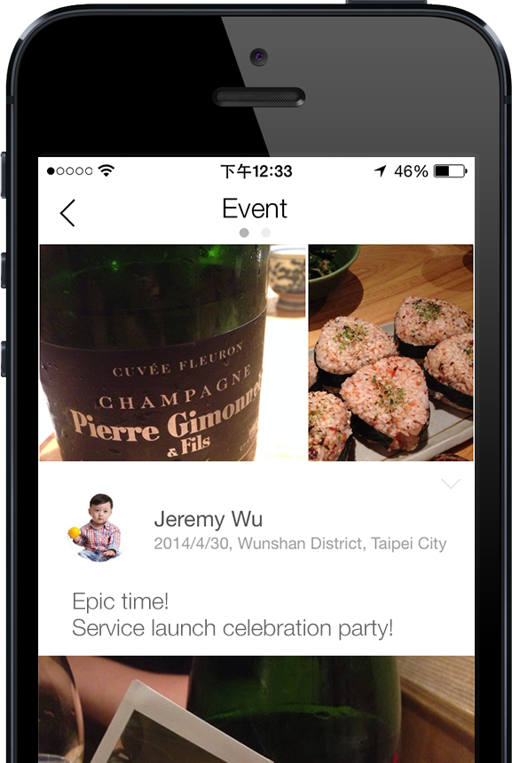

以最簡單的方式，記錄並分享每個時空下的回憶。
獨樂樂不如眾樂樂，出門旅行、畢業趴、生日趴、好友聚餐、同事聚會、同學會、婚禮、球賽或演唱會拍了一堆照片後，一定要用 DIITU 串連大伙兒在一起的精采時光。
DIITU是一個專屬於回憶的服務，特別為「群體回憶」優化，不僅要讓人們更容易記錄分享生活片刻，更要用最棒的方式珍藏生活中"所有的"經典時光，讓回憶有一個最美的家。
不想漏掉大伙兒在活動中的回憶吧? DIITU獨家特有的時光牆 (Time Wall) 能幫你自動串連相同時空下眾人的回憶。
試著分享一些跟朋友在一起的照片，看看時光牆如何幫你找回大家分享的時光，重現當下所有感動!
